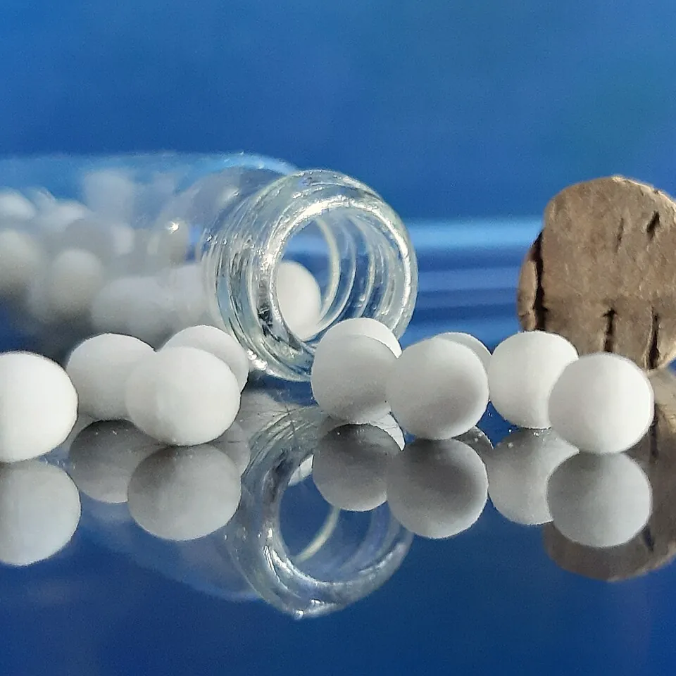

அனைத்து சிகிச்சைகள்உணவும் இயற்கையும்
பயோகெமிக்
ஜெர்மனியில் டாக்டர் ஷூஸ்லர் தொடங்கிய, பன்னிரண்டு செல் உப்புகளைக் கொண்ட எளிய மாத்திரை முறை. செல்களுக்குத் தேவையான கனிமங்களை மீட்டுத் தருவதே நோக்கம்.

எப்படி உதவுகிறது
- நோய் எதிர்ப்பாற்றலுக்குத் துணைபுரிகிறது
- ஆற்றலை மேம்படுத்துகிறது
- சருமத்தைப் பேணுகிறது
- செரிமானத்துக்குத் துணைபுரிகிறது
- அன்றாடம் எளிதில் பயன்படுத்தலாம்
- முழு மனிதரையும் கருத்தில் கொள்கிறது
நாங்கள் வழங்குபவை
உங்களுக்கு ஏற்றது எது என்று எங்கள் மருத்துவரிடம் கேளுங்கள்.
பன்னிரண்டு செல் உப்புகள்
- கல்கேரியா ஃப்ளோரிகா
- கல்கேரியா ஃபாஸ்ஃபோரிகா
- கல்கேரியா சல்ஃப்யூரிகா
- ஃபெரம் ஃபாஸ்ஃபோரிகா
- காலி மூரியாட்டிகம்
- காலி ஃபாஸ்ஃபோரிகா
- காலி சல்ஃப்யூரிகா
- மெக்னீஷியா ஃபாஸ்ஃபோரிகா
- நேட்ரம் மூரியாட்டிகம்
- நேட்ரம் ஃபாஸ்ஃபோரிகா
- நேட்ரம் சல்ஃப்யூரிகா
- சிலிக்கா
இத்தளத்திலுள்ள தகவல்கள் பொதுவான நல்வாழ்வு விழிப்புணர்வுக்கானவை. இவை நோயறிதலோ, குணமாகும் என்ற உறுதிமொழியோ அல்ல; மருத்துவ ஆலோசனைக்கு மாற்றும் அல்ல. உங்களுக்குப் பரிந்துரைக்கப்பட்ட சிகிச்சையைத் தொடருங்கள், தகுதி பெற்ற மருத்துவரை அணுகுங்கள். எங்கள் சேவைகள் உரிய தகுதிக்கும் சட்ட வரம்புக்கும் உட்பட்டு வழங்கப்படுகின்றன. விளக்கப் படம்.
இதே தூணிலிருந்து

மூலிகை மருத்துவம்
இலை, வேர், விதை, மலர், பட்டை ஆகியவை சாறு, பொடி, கஷாயம், எண்ணெய், பற்றாகத் தயாரிக்கப்படுகின்றன.

இயற்கை மருத்துவம்
நிலம், நீர், காற்று, நெருப்பு, ஆகாயம் உடலின் தன்னாற்றலுக்குத் துணைநிற்கின்றன.

பஞ்சகர்மா
ஆழ்ந்த சுத்திகரிப்புக்கும் புத்துணர்வுக்குமான ஆயுர்வேதத்தின் ஐந்து செயல்கள்.

எலக்ட்ரோ ஹோமியோபதி
தாவர அடிப்படையிலான மென்மையான மருந்து முறை.